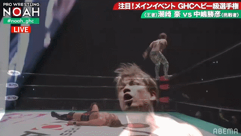
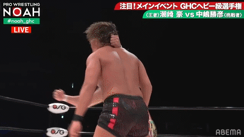

#100 潮崎豪 vs. 中嶋勝彦 2020.11.22 NOAH WON:4.75星 cagematch 9.48

我几乎不看noah现在的比赛，这两位选手我也不认识，对这场比赛我的期望并不是很高。开局双方没有角力，节奏慢得吓人，不过中岛拒绝与潮琦角力，不断用鞭腿攻击潮琦大腿的桥段倒是很快展现出了双方的角色形象。俩人磨了很久之后比赛迎来了第一个爆点——潮琦用一记belly to belly suplex把中岛扔下了擂台。

我个人并不喜欢这个安排。慢节奏的比赛过后往往需要一段快节奏的表演带动观众的情绪，安排这么一个抱摔最终的结果就是中岛在台下几乎躺了二十秒，场子还没有热起来就又冷了下去。比赛从潮琦一记平掌切切到角柱后才进入到了较为优秀的范畴，中岛开始针对潮琦的手臂攻击。手臂负伤使潮琦的手刀发挥不出应有的威力，但潮琦努力克制住了伤痛，打出了一段不错的连续平掌切。

随后双方开启了一段质量不错攻防，在一记lariat之后，俩人躺了一分多钟，比赛进入到了对攻环节。

相比于开场不久的抱摔，一段精彩攻防之后的躺尸是我更能接受的做法，躺尸后双方缓缓爬起进入回合制互殴似乎也已经成了日摔的经典桥段。从你一拳我一脚，演变到你n拳我n脚，如果双方打得够硬我还是很吃这一套的，潮琦和中岛的对攻就相当精彩。


但不得不说，在疫情期间没有观众呼声的情况下，两人对攻的时间实在是有些久了。对攻持续了7分钟之后，比赛终于步入了下一个环节。中岛继续针对潮琦的手臂发动攻击并取得优势，随后贡献了一个抽象失误。

但好在潮琦台下的这一记lariat相当之硬，挽回了一点颜面。

俩人又躺了好久，回到台上中岛依靠抬膝破解潮琦的月面宙返后占到了上风，连续用腿部攻击潮琦。本场比赛最出乎我意料的桥段是中岛不顾裁判阻拦连续肘击倒地的潮琦，我一度担心潮琦会因为无法继续比赛而被判负。

随后潮琦用一记sleeper suplex开启了反击之势，证明了我的担心是多余的，月面宙返也顺利命中，可惜因为手臂伤势压制不够及时未能取得胜利。
说实话我不明白为什么这么安排，我更希望潮琦在三记lariat之后补上一发moonsault带走比赛。不过由于我对这两位选手并不了解，所以如果lariat就是潮琦豪的终结技那么以上的话当我没说。
本场比赛的优点在于选手通过打法对角色的演绎十分到位，双方的打击感也尤为出色，只是在查阅选手相关信息的时候发现潮琦豪在国内摔迷之间竟有着“软豪”的美称。本场比赛的缺点也很明显，节奏实在太拖了，对攻以外的部分用1.5倍速看观感会好上很多。
本场比赛我能给8.3分——还不错的打击比赛。